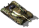
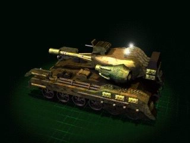

Скорпион


Панель информации в игре
- Скорость:
- 64 км/ч
- Энергия (HP):
- 750
- Обзор:
- 350 м
- Время производства:
- 31 с
| Оружие | Мощь | Дальность | Цели |
|---|---|---|---|
| Малокалиберная пушка | 12 | 1-6 | ЗВ |
| Тяжелое орудие | 125 | 1-8 | З |
Затраты: Экстракт 1400 Железо 1200 Уголь 500 Титан 300
Описание
Тяжелый оборонительно/наступательный танк, оснащенный современным 75-мм орудием со стабилизатором, а также активной броней. Дополнительное вооружение этой машины включает две башни с 14-мм пулеметами. Боеприпасы, используемые Скорпионом, далеко опередили свое время. Подкалиберные снаряды с вольфрамовым сердечником способны пробить даже самую совершенную плазменную броню врага. Оснащается также системой распознавания свой-чужой, а чтобы обеспечить этому монстру скорость, хотя бы небольшую, потребовался ионный двигатель.
Эта идеальная человеческая бронированная машина станет основой вашей наступательной и оборонительной стратегии. Эффективность возрастает еще больше при вертолетной поддержке.
Связанное
- Требует
- Пионер, Завод, Скорпион
- Исследуется проектом
- Скорпион
- Производится в
- Завод
- Перевозится в
- Гэлэкси S9
- Оружие
- Малокалиберная пушка (slot 0), Тяжелое орудие (slot 1)
- Улучшается проектом
- Броня Титана, Турбина Гайна
Параметры конфигурации, которых нет в игре (8)
HUMAN- 3
TRACE- 1
AILEVEL- 1
TURN_SPEED- 0.025
AIUNIT- AIUNIT_TANK
SOLDIER_TYPE- SOLDIERTYPE_UNKNOWN
INDEPENDENT- tylko w akcji
TYPE- R_hPOJAZD